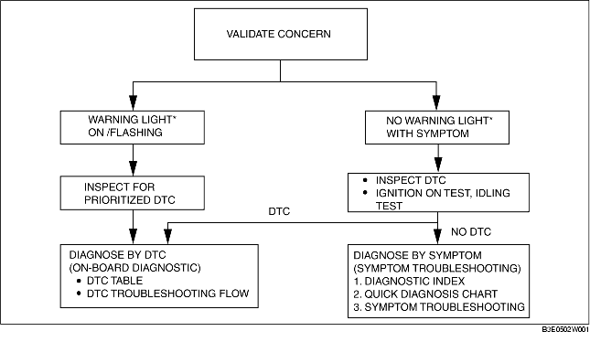

• When the customer reports a vehicle malfunction, inspect the malfunction indicator lamp (MIL), AT warning light indication, and PCM memory for diagnostic trouble code (DTC), then diagnose the malfunction according to the following flowchart.

*: Malfunction indicator lamp (MIL), AT warning light